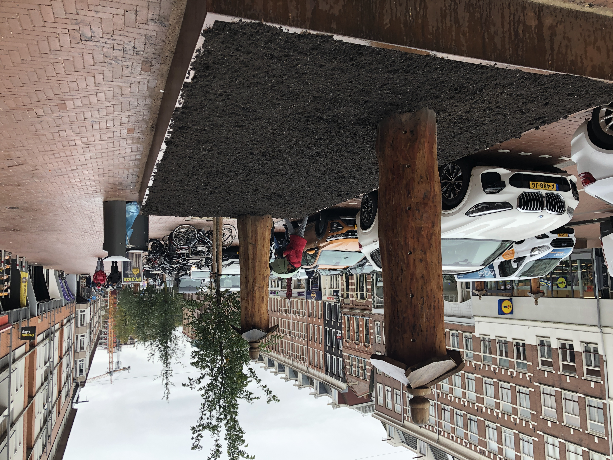
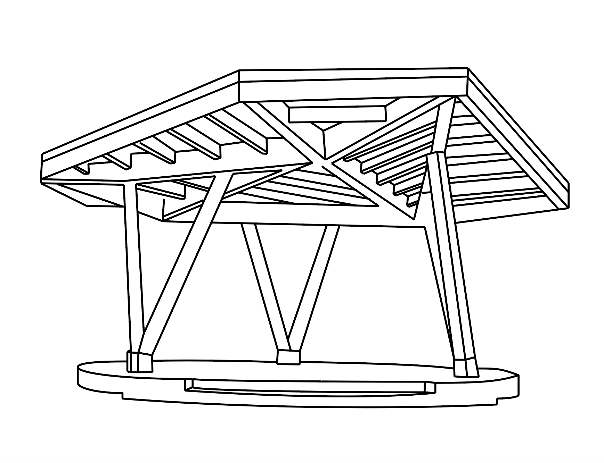

Connectie

Wie ben ik?
Met interesse voor de wereld om mij heen heb ik dit project uitgevoerd. Toen ik Stadshout tegen kwam voelde ik een intrinsieke interesse in dit initiatief.
Waarom Stadshout?
Het idee van het versnipperen van bomen heb ik altijd al raar gevonden. Waarom versnipperen als het ook gebruikt kan worden voor het creëeren van nieuwe dingen. En ook dit gebeurt in de stad Amsterdam. Toen ik het initiatief Stadshout tegenkwam heeft mij dit dan ook verder aan het denken gezet.
Uitblinkende projecten

Bouw van leefruimte voor dieren in Eerste van Swindenstraat.

Een in het Amstelpark gerealiseerde muziekkiosk.